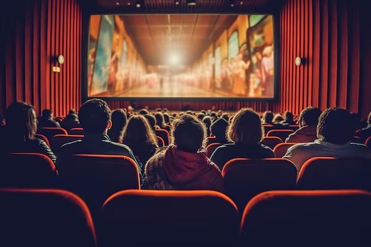
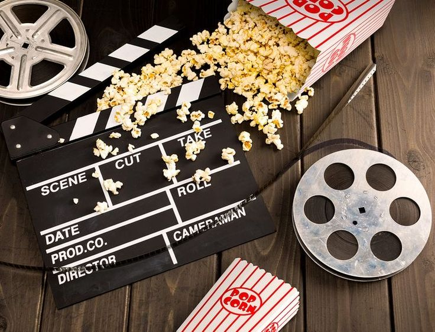

10 найочікуваніших фільмів цього року
1. Продовження гучних франшиз
Цього року повертаються масштабні блокбастери, які вже встигли зібрати цілу армію шанувальників. Ми знову зустрінемося зі знайомими героями, що опиняються в ще складніших обставинах. Чекаємо на несподівані сюжетні повороти, ефектні баталії та розкриття нових таємниць.
2. Незалежне кіно та дебютні роботи
Окрім великих студійних проектів, на кіноринку з’являється чимало талановитих дебютантів. Їхні фільми часто вирізняються оригінальним баченням, свіжими ідеями та низькими бюджетами, а натхненні режисери пропонують експериментальні форми й нові жанрові мікси. Такі картини можуть стати сюрпризом навіть для вибагливих кіноманів.
3. Анімаційні сюрпризи
Мультиплікація продовжує активно розвиватися, задовольняючи запити не лише дітей, а й дорослих. Нові анімаційні стрічки поєднують яскравий візуальний стиль і глибокий зміст. Сучасні технології дозволяють творцям реалізовувати найсміливіші задуми, від авторських мультфільмів до проектів великих студій зі знаменитими голосами акторів.
4. Ремейки й адаптації
Ремейки та екранізації популярних історій продовжують захоплювати глядачів. Часом це переосмислені класичні сюжети, часом – свіжі погляди на вже знайомий матеріал. Чи виправдають вони великі сподівання шанувальників оригіналів – побачимо. Та попередні приклади свідчать, що якісне відродження класики може відкрити її з нового боку.
5. Гучні імена й несподівані колаборації
Цього року нас тішитимуть режисери зі світовим іменем, які обіцяють повернутись із новими проектами. Дехто з них уже встиг засвітитися на фестивалях, отримавши схвальні відгуки критиків. А декотрі, несподівано для всіх, об’єднуються, щоб створити щось геть нестандартне. Завдяки таким колабораціям ми можемо побачити унікальний синтез стилів.

Фінал: Загалом, сезон обіцяє бути багатим на враження, тож радимо запастися терпінням та місцем у списку “треба переглянути”. Кожен глядач знайде собі щось до смаку: від яскравих блокбастерів до авторських історій, що лишають особливий післясмак.